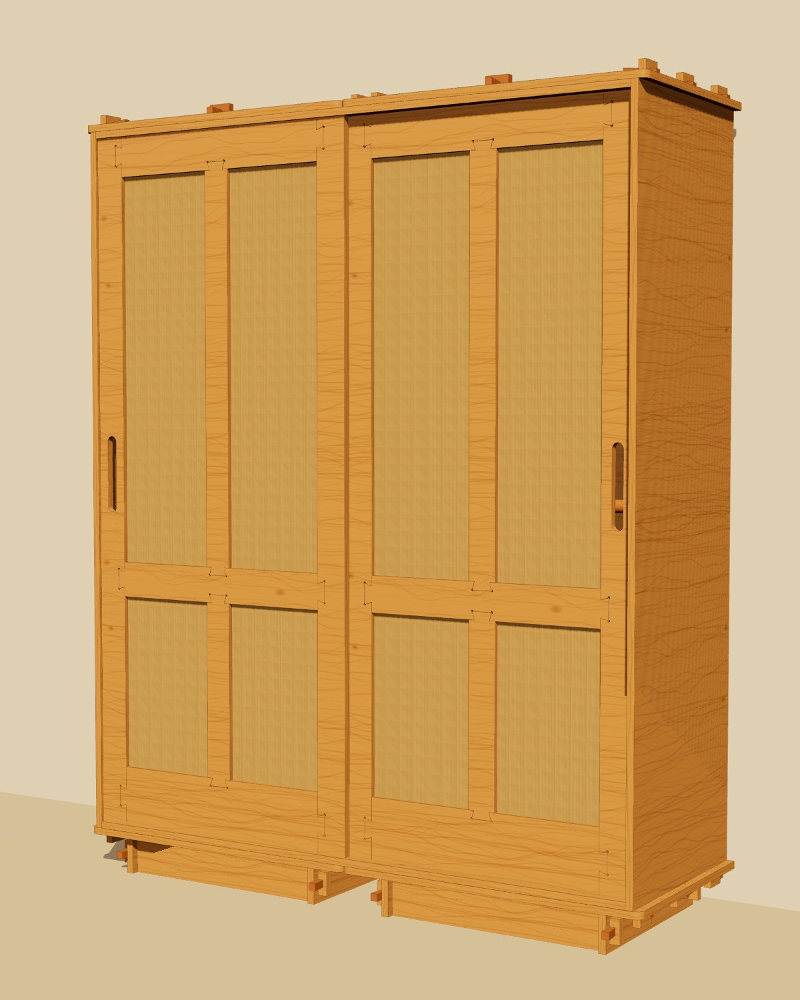

Proyecto 05 · Recámara · Producto
Ropero CNC
160 × 200 × 55 cm en dos módulos de 80 cm. Se corta completo en router CNC, viaja en empaque plano y se arma a mano, sin pijas ni herrajes: cada unión es una espiga pasante que se aprieta con una cuña de madera.

Modelo 3D
Diseño
Qué cambió respecto al ropero de pocket holes
- Cero pijas, cero herrajes de unión. 12 espigas pasantes por módulo en techo y base, 4 en el zócalo y 2 llaves en el riel superior, todas apretadas con cuñas de madera de 80 × 10→18 mm. Se arma y se desarma a mano.
- Las cuñas son el detalle. Arriba, las espigas sobresalen 30 mm sobre el techo y forman un remate de cuñas a la vista. Abajo quedan escondidas dentro del zócalo.
- Techo y base con vuelo de 20 mm y esquinas frontales redondeadas R20. El costado queda remetido y da una línea de sombra limpia.
- Zócalo remetido 50 mm, armado también con espiga y cuña: el ropero parece flotar.
- Dos puertas corredizas de bastidor de 771 × 1810 mm que corren entre los costados exteriores, dentro del cuerpo. Se traslapan 18 mm y cada una deja un paso libre de 75 cm: siempre abres medio ropero completo.
- Costados exteriores de 55 cm y centrales de 47.6 cm. Las puertas pasan por delante de los centrales y quedan protegidas por los exteriores, como en un mueble empotrado. El fondo total no pasa de 55 cm.
- Fondo útil de 48.9 cm entre el fondo y la puerta trasera. El carril de puertas mide solo 7.4 cm y la ranura del fondo va pegada atrás. Caben ganchos de 44–46 cm.
- Rieles de madera de una pieza de 1.54 m entre los costados exteriores, con pestañas de 9 mm en cajas. El superior además cuelga del techo con 2 llaves con cuña al centro. Ranuras de 20 × 6 mm abajo y 20 × 14 mm arriba. Sin rieles ni ruedas metálicas.
- Puertas de bastidor: largueros de 80 mm, travesaños de 160, 90 y 110, y parteluz de 70, unidos con cola de milano cortada en el plano y Resistol. Pesan cerca de la mitad que una puerta maciza y permiten cortar todo en 6 hojas.
- Jaladera calada de 28 × 198 mm en la propia puerta, en el canto exterior de cada una. No lleva jaladera comprada.
- Cuatro ventanas por puerta de 270 mm de ancho, altas de 1000 mm y bajas de 450 mm, con un travesaño a la altura de la mano.
- Yute intercambiable. Cada ventana lleva un panel de 5 mm forrado de yute que se asienta en el rebaje trasero de 10 × 6 mm del bastidor y se sujeta con 4 taravillas de madera que giran a mano. Se puede cambiar por ratán, lino o tela.
- Interior útil. Módulo 1 (ropa larga): entrepaño sombrerero, tubo de madera a 1.59 m y zapatera inclinada de dos listones. Módulo 2 (ropa corta): dos tubos, a 1.84 m y a 1.00 m.
- Mariposas de madera unen los dos techos y amarran los módulos entre sí.
- Canto de triplay a la vista, lijado y encerado, en vez de cubrecanto. Se ven las capas y queda con un acabado de taller de diseño.
Tolerancias para el taller: mortaja +0.3 mm sobre la espiga, cajas de 9.5 mm para pestañas de 9 mm, ranura de cuña 18.4 × 14 mm con 1.5 mm de tiro, fresa de 6 mm con dog-bones en todas las esquinas interiores. Antes de cortar todo, corta la hoja del calibrador (plantilla 2) en un pedazo del mismo triplay: el grosor real del triplay varía entre 17.4 y 18.3 mm.
Resumen
Lo que vas a construir
Presupuesto
≈ MXN
Estimaciones en MXN, octubre 2026. El triplay se calcula por hoja completa. El corte CNC está estimado con una tarifa pública de $7 por minuto más $70 de arranque por hoja: hay que cotizarlo con el taller.
Despiece
Piezas numeradas
Hoja de detalle por pieza
Corte CNC
Diagramas de corte por hoja
Hojas de 1220 × 2440 mm, 10 mm de margen y 12 mm entre piezas. En café claro van las cajas y ranuras de profundidad parcial.
Archivos para el taller
- ropero_cnc.dxf: todas las hojas en mm. Capas: CORTE_EXT, CALADO_INTERIOR, TEXTO, cajas y ranuras por profundidad (CAJA_9_5MM, CAJA_6MM, CAJA_5_5MM, RANURA_6MM, RANURA_8MM, RANURA_14MM), y trayectorias ya compensadas para fresa de 6 mm (TRAYECTORIA_EXT_FRESA6, TRAYECTORIA_INT_FRESA6). Geometría neta con dog-bones.
- Plantillas 1:1 (PDF): cuña, mariposa, taravilla, calibrador de espiga y mortaja, jaladera, esquina de ventana y cola de milano del bastidor.
Armado
Paso a paso en 3D
Lo nuevo de cada paso se ve resaltado. Marca cada paso al terminarlo: se guarda en este teléfono. Se arma entre dos personas, solo con un mazo de hule para las cuñas.
Taller